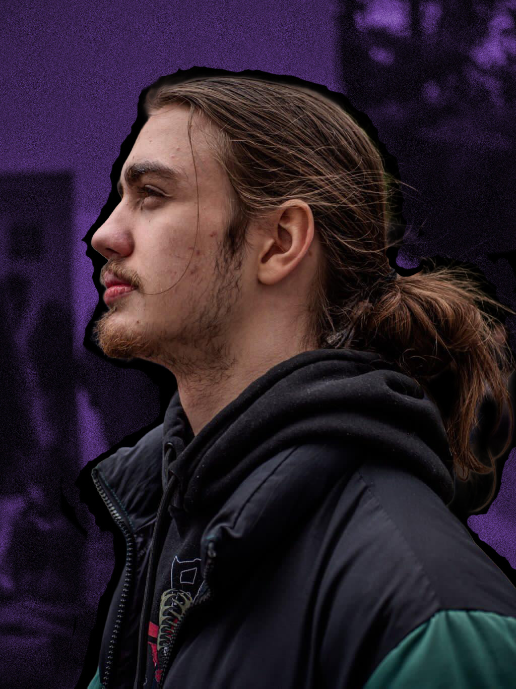

Portfolio
À PROPOS
Récemment diplômé d'un Bac Pro Communication Visuelle, je me tourne aujourd'hui vers ma deuxième passion : le développement. Naturellement je me suis dirigé vers le BTS SIO (option SLAM). Étant passionné par les jeux vidéo depuis petit, mon objectif est de créer mon propre studio et de développer les univers que j'ai imaginés.
Ce site me permet de vous présenter les projets que j'ai réalisés.
